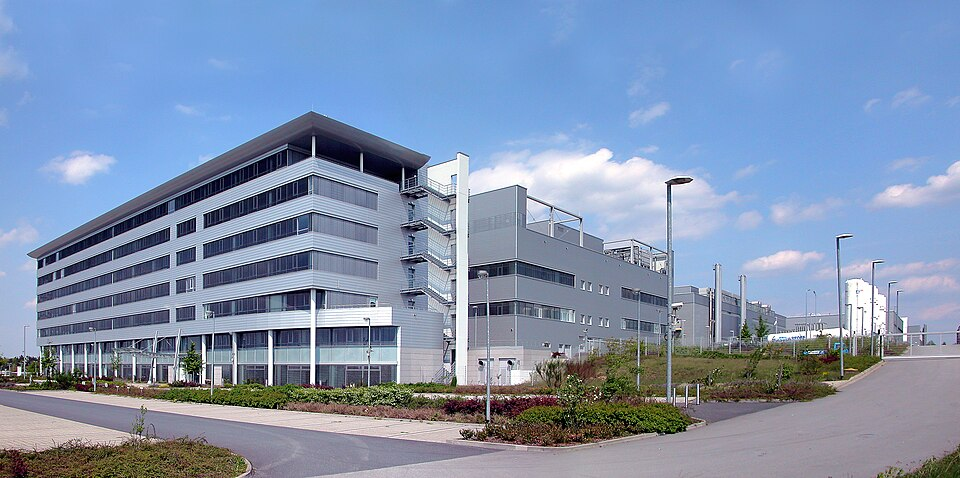

The Dresden Bet
Why Infineon’s ‘World’s Largest’ Power Fab Doesn’t Settle the AI Power Race
On July 3, Infineon opened what it calls the world’s largest smart power semiconductor fab — a €5 billion facility in Dresden that doubles the site’s capacity and, the company says, arrived several months ahead of schedule (Dahad 2026).
It is not merely a capacity expansion. It is something more consequential: the first test of whether a single-site capital bet, made at the peak of an AI capex cycle, can be presented as securing durable industrial leadership rather than simply adding capacity into a market whose demand curve is still unproven.
Beyond the ribbon-cutting, this opening has effectively reframed Infineon’s identity — from a global diversified power-semiconductor supplier serving automotive, industrial and consumer markets, into a company whose investor narrative now runs substantially through a single, AI-driven growth line. The Dresden fab’s guided contribution to that line — roughly €1.5 billion in fiscal 2026, rising to €2.5 billion in fiscal 2027 — has become the number analysts and the German chancellor alike now point to as evidence of European chipmaking’s relevance in the AI era, via powering AI data centers and grids (Infineon Raises 2026 Outlook as AI Demand Fuels Revenue Growth 2026).

Global “virtual fab” approach and Europe’s aspirations
This bet on capacity expansion matters far beyond Infineon or Dresden. Its “virtual fab” approach has global footprints also in Austria and Malaysia, using the same tools and processes, according to an interview with COO Alexander Gorski, who described the execution of the investment project as “on time, on budget… a lighthouse for Europe, for Germany, for the Silicon Saxony” (Dahad 2026). The same architecture already links Villach, Austria and Kulim, Malaysia as “One Virtual Fab” for wide-bandgap technologies, sharing technologies and processes to enable fast ramping and efficient operation across sites (“Infineon Opens the World’s Largest SiC Power Semiconductor Fab in Malaysia” 2024).
The Dresden opening is being read, implicitly, as a referendum on whether Europe’s chip-sector industrial policy — Chips Act subsidies, sovereignty rhetoric, state-backed capacity bets — can produce competitive capacity rather than simply expensive capacity. If Dresden ramps cleanly into real demand, it becomes the model case for European semiconductor policy going forward. If it doesn’t, it becomes the cautionary one.
Just-in-time or overcapacity?
Here, however, is the uncomfortable truth Infineon and its boosters must confront: “world’s largest fab” does not translate cleanly into “secures industrial leadership” — for three key reasons.
First, the arithmetic of what’s actually being measured. Fab size denotes potential output, not realized advantage. Utilization, yield, and cost-per-die — none of which are disclosed at Dresden’s opening — determine whether capacity becomes margin or becomes depreciation drag. Infineon’s own language describes its AI power business as supply-limited rather than demand-capped, with CEO Jochen Hanebeck stating the company is “shifting spare manufacturing capacity from other areas while simultaneously ramping up new capacity as quickly as possible” to meet demand currently in allocation (“Automotive and AI Lift Infineon Q2, Point to FY2026 Revenue Above $18B” 2026). That is a genuinely favorable signal — but it is a claim about today’s order book, not a guarantee that fiscal 2027’s guided €2.5 billion materializes on schedule.
Second, the downstream exposure. The fab is not AI-dedicated; it produces general power and analog/mixed-signal chips for automotive, industrial and AI markets alike. Automotive and industrial — the bulk of Infineon’s actual volume — are only gradually recovering from the 2023–24 inventory correction that hit the sector broadly; Infineon’s own Power & Sensor Systems segment was still down 3% sequentially as recently as its fiscal Q1 2026 report, before the AI-driven rebound took hold (“Infineon to Invest €500m to Meet ’Dynamic’ AI Data Centre Demand” 2026). A €5 billion facility is a fixed cost that must be absorbed regardless of which segment is soft in a given quarter. This is the same failure mode that hit SiC capacity built for a decelerating EV boom; whether AI capex commitments prove more durable than EV capex commitments did is precisely the open question, not a settled one.
Third, the competitive-set question. Infineon’s guided AI data-center figure sits ahead of, but not wildly ahead of, STMicroelectronics’ own guidance — raised to about $1 billion for 2026, with the possibility of doubling again in 2027 (“STMicroelectronics Raises Its Revenue Ambition for Data Centers Amidst Continued Strong Demand for AI Infrastructure” 2026) — even as ST’s overall business is considerably weaker, with 2025 net income down roughly 89% to $166 million from $1.557 billion in 2024 (Nachez 2026). Meanwhile onsemi claims the boldest strategic positioning, describing itself as “the only broad-based U.S. power semiconductor supplier” spanning the full AI data-center power tree “from grid to processor” (“[ON Q1 2026 Earnings Call] Onsemi Reports Inflection Point” 2026), with AI data-center revenue up 30% sequentially and on track to double year-over-year in 2026 — without yet disclosing a comparable absolute dollar figure. Texas Instruments and ROHM are active in adjacent layers of the same market but disclose even less. In other words: nobody in this field, including Infineon, has yet proven the durability of their position with numbers that survive more than a few quarters of scrutiny.
The “grid-to-core” story
“Grid-to-core” (also called “grid-to-processor”) describes the emerging effort to redesign AI data-center power delivery as a single, high-voltage DC path rather than the legacy multi-stage AC architecture. Today, power typically enters a data center as medium-voltage AC, is stepped down through a conventional iron-core transformer, converted to DC inside an uninterruptible power supply, converted back to AC, and converted again to low-voltage DC at the rack — a chain of four to five conversions that Delta estimates caps efficiency around 87.6% (“Data Center DC Embraces 800V Power Shift” 2026; “How Delta Leveraged a Decade of R&D to Break Into Nvidia’s New Server Power Market” 2025). The 800V/±400V DC architectures now being pursued by NVIDIA and its ecosystem partners collapse that chain into far fewer stages, with Delta estimating efficiency gains to roughly 92.1% and beyond (“How Delta Leveraged a Decade of R&D to Break Into Nvidia’s New Server Power Market” 2025).
This restructuring is not one market but at least three layered ones:
- Discrete power devices and modules — silicon, SiC and GaN switches, gate drivers, and controllers that perform the actual voltage conversion. This is the layer where Infineon, STMicroelectronics, onsemi, Texas Instruments, and ROHM compete directly, and where Dresden and Kulim’s fab capacity is most relevant (“Data Center Power” 2026).
- Solid-state transformers (SSTs) — a genuinely new device category that replaces the conventional iron-core transformer with high-frequency, semiconductor-based power electronics, converting medium-voltage AC directly to 800VDC at efficiencies reported as high as 98.5% (“Delta Demos 800 VDC AI Data Center Power Racks and 2.4MW CDUs at GTC” 2026). This category is being led by Delta, Eaton (via its Resilient Power acquisition), Siemens, Hitachi Energy, GE Vernova, and startups such as Heron Power and DG Matrix — not by Infineon (“Nvidia GTC 2026” 2026).
- Systems and rack integration — the layer that assembles silicon and SSTs into deployable data-center power infrastructure: in-row power racks, battery backup units, liquid-cooling distribution, and microgrid controls. Delta, Vertiv, Schneider Electric, and Eaton dominate this layer, competing on integration depth rather than device fabrication (“Data Center Power” 2026).
Infineon’s capacity leadership is real, but it is leadership concentrated in the first of these three layers. The second and third — arguably the layers closest to where hyperscalers actually sign contracts — are being won by different companies entirely, with Delta explicitly framing the transition as a chance to “cement its global leadership in power and thermal management” beyond its traditional device business (“Delta Demos 800 VDC AI Data Center Power Racks and 2.4MW CDUs at GTC” 2026).
Where sovereignty policy has been silent
This is where the real danger lies for the sovereignty narrative Berlin has attached to Dresden. European industrial policy has always favored capital-intensive, visible, politically legible capacity — a fab is a ribbon-cutting; a solid-state transformer certification pipeline or a systems-integration partnership is not. The sectors that will define European competitiveness in the AI-power stack over the next decade are not solely the discrete-device layer where Infineon already leads; they include the SST and systems layers, dominated at present by Taiwanese (Delta), American (Eaton, Vertiv), and German-but-non-Infineon (Siemens) players — layers where European chip-sector industrial policy has, so far, been largely absent from the conversation.
Infineon does hold one underused hedge against the concentration risk this creates: its existing “One Virtual Fab” architecture already links Dresden, Villach, and Kulim for shared process and qualification data (“Infineon Opens the World’s Largest SiC Power Semiconductor Fab in Malaysia” 2024). If Dresden’s European capacity runs ahead of near-term demand, that network — extended further through Infineon’s Penang and Taipei footprint, sitting closer to the hyperscaler and systems-integrator ecosystem (Delta among them) actually driving AI-power demand in Asia, in response to the US and global AI demands — could in principle redistribute load and shorten the feedback loop between demand signals and capacity planning. Infineon has not yet disclosed utilization or demand information; doing so would let markets, and policymakers, judge the Dresden bet on a portfolio basis rather than as an isolated site.
The true test
The test, six months or two fiscal quarters from now, will not be whether Dresden is the world’s largest smart power fab. It already is.
The test is whether “largest” converts into “leading” once AI capex, automotive recovery, and at least four competing device suppliers all have their say — and whether Europe’s sovereignty bet was placed on the layer of this market that actually determines who wins it. The dynamic capability of AI also suggests Volatility, Uncertainty, Complexity, and Ambiguity (VUCA) that Infineon now leads in a small yet critical segment of the AI infrastructure capacity building.